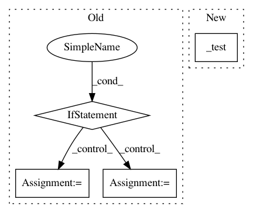

bf0c7bd1636f34eb6ed322e4194f987daa3336f1,pytorch/pytorchcv/models/others/oth_naivenet.py,,,#,289
Before Change
// return get_naivenet("naivenet20", Resv1Block, [3, 1, 1, 1, 1])
if __name__ == "__main__":
import os
from torch.autograd import Variable
from torchsummary import summary
from torchviz import make_dot
import tensorwatch
os.environ["CUDA_VISIBLE_DEVICES"] = "0"
x_image = Variable(torch.randn(8, 3, 640, 640))
// net = naivenet25()
net = naivenet20()
print(net)
y = net(x_image)
// print(y)
summary(net.to("cuda"), (3, 640, 640))
// tensorwatch.draw_model(net, [1, 3, 640, 640])
If you want to show with torchviz,
you need to modify the return format of the network.
// vis_graph = make_dot(y, params=dict(list(net.named_parameters()) + [("x", x_image)]))
// // vis_graph.format = "png"
// // vis_graph.format = "pdf"
After Change
if __name__ == "__main__":
_test()
In pattern: SUPERPATTERN
Frequency: 3
Non-data size: 4
Instances
Project Name: osmr/imgclsmob
Commit Name: bf0c7bd1636f34eb6ed322e4194f987daa3336f1
Time: 2020-03-30
Author: osemery@gmail.com
File Name: pytorch/pytorchcv/models/others/oth_naivenet.py
Class Name:
Method Name:
Project Name: pytorch/ignite
Commit Name: 7753eabc5af8bed2cca4713805613adfbc460a8e
Time: 2021-02-21
Author: francois.cokelaer@gmail.com
File Name: tests/ignite/metrics/test_precision.py
Class Name:
Method Name: _test_distrib_integration_multilabel
Project Name: pytorch/ignite
Commit Name: 7753eabc5af8bed2cca4713805613adfbc460a8e
Time: 2021-02-21
Author: francois.cokelaer@gmail.com
File Name: tests/ignite/metrics/test_recall.py
Class Name:
Method Name: _test_distrib_integration_multilabel